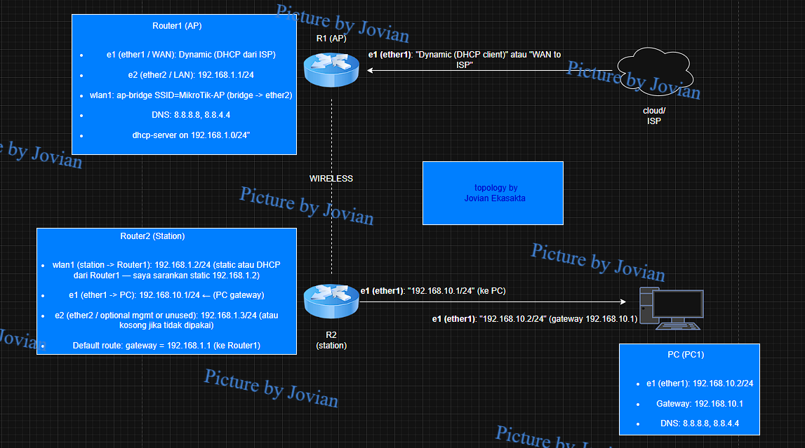

1. MODE ACCESS POINT (AP)

Tampilan topologi di gns3
.png?raw=true)
security profil
.png)
WIFI INTERFACE
Pengertian Mode Access Point
Dari sumber MikroTik Documentation (2024), mode Access Point (AP) pada MikroTik adalah mode operasi wireless dimana router berfungsi sebagai titik akses yang memancarkan sinyal WiFi yang dapat diakses oleh perangkat client. Mode ini memungkinkan MikroTik menjadi pusat koneksi wireless untuk berbagai perangkat seperti laptop, smartphone, atau router lain yang dikonfigurasi sebagai station.
Dari sumber MikroTik Wiki (2023), RouterOS mendukung dua mode AP utama: mode ap-bridge yang memungkinkan hingga 2007 klien terhubung secara bersamaan, dan mode bridge yang berfungsi sebagai bridge layer 2 sederhana. Untuk sebagian besar kasus penggunaan umum, mode ap-bridge adalah pilihan yang direkomendasikan.
Konfigurasi Mode AP menggunakan WinBox
Dari sumber NetworkLessons (2024), konfigurasi mode AP pada MikroTik memerlukan beberapa langkah utama, yaitu mengatur interface wireless ke mode ap-bridge, menentukan SSID, band, frekuensi, dan security profile.
Dari sumber MikroTik Wiki (2023), langkah-langkah konfigurasi dasar mode AP meliputi pengaturan mode, SSID, frequency, band, dan security profile. Semua parameter ini dapat dengan mudah dikonfigurasi melalui WinBox.
Berikut adalah langkah-langkah konfigurasi mode AP melalui WinBox:
1. Buka WinBox dan hubungkan ke router MikroTik
2. Klik pada menu Wireless
3. Pada jendela Wireless Tables, klik tab Security Profiles
4. Klik tombol PLUS (+) untuk membuat profil baru
5. Pada jendela New Security Profile:
- Masukkan nama profil (misal: "profile1") di kolom Name
- Pilih "dynamic keys" pada dropdown Mode
- Centang WPA2 PSK pada panel Authentication Types
- Masukkan password yang kuat di kolom WPA2 Pre-Shared Key
6. Klik Apply dan OK
1. Di WinBox, klik pada menu Wireless
2. Pada jendela Wireless Tables, klik tab WiFi Interfaces
3. Klik dua kali pada interface wireless (biasanya "wlan1")
4. Pada tab General:
- Name: Tentukan nama identifikasi (misal: "AP-WiFi")
- Mode: Pilih "ap bridge"
- Klik OK
5. Pada tab Configuration:
- SSID: Tentukan nama jaringan WiFi (misal: "MikroTik-AP")
- Country: Pilih negara untuk mematuhi regulasi lokal
- Klik OK
6. Pada tab Channel:
- Band: Pilih band frekuensi (misal: "2GHz-B/G/N")
- Channel Width: Pilih lebar kanal (misal: "20MHz" atau "20/40MHz")
- Klik OK
7. Pada tab Security:
- Authentication Types: Pilih tipe keamanan (misal: WPA2 PSK)
- Security Profile: Pilih profil keamanan yang sudah dibuat sebelumnya
- Klik OK
1. Pada menu kiri, klik Bridge
2. Klik tombol + untuk membuat bridge baru
3. Beri nama bridge (misal: "bridge1")
4. Klik OK
1. Pada menu Bridge, klik tab Ports
2. Klik tombol + untuk menambahkan port
3. Pilih interface wireless (misal: "wlan1") dari dropdown Interface
4. Pilih bridge yang sudah dibuat pada dropdown Bridge
5. Klik OK
6. Ulangi langkah 2-5 untuk setiap port ethernet yang ingin disertakan dalam bridge
Verifikasi Konfigurasi AP
Setelah mengkonfigurasi mode AP, penting untuk memverifikasi bahwa konfigurasi tersebut berjalan dengan baik. Berikut adalah beberapa langkah verifikasi di WinBox:
1. Buka menu Wireless
2. Periksa interface wireless, pastikan status menunjukkan "R" (running)
1. Buka menu Wireless
2. Klik tab Registration Table
3. Di sini Anda akan melihat semua client wireless yang terhubung
1. Buka menu Wireless
2. Klik tab Access List
3. Di sini Anda dapat melihat dan mengelola izin akses client
Konfigurasi Tambahan untuk AP
Dari sumber MikroTik Documentation (2024), ada beberapa parameter tambahan yang dapat dikonfigurasi untuk mengoptimalkan kinerja AP:
1. Klik dua kali pada interface wireless
2. Klik tab Advanced
3. Set Max Station Count ke nilai yang diinginkan (misal: 30)
4. Klik OK
1. Klik dua kali pada interface wireless
2. Klik tab Channel
3. Set Channel Width ke nilai yang diinginkan (misal: 20/40MHz)
4. Klik OK
1. Klik dua kali pada interface wireless
2. Klik tab Wireless
3. Pilih Country yang sesuai (misal: Indonesia)
4. Klik OK
1. Klik dua kali pada interface wireless
2. Klik tab Advanced
3. Set Distance ke nilai yang sesuai (misal: indoors)
4. Klik OK
Pengaturan Distance mempengaruhi algoritma ACK timing. Untuk area indoor, gunakan nilai "indoors". Untuk koneksi jarak jauh, gunakan nilai numerik dalam kilometer (misalnya "10" untuk 10km) atau "dynamic" agar MikroTik secara otomatis menyesuaikan timing berdasarkan client terjauh.
Kesimpulan Mode Access Point: Dari 2 pendapat tersebut dapat disimpulkan bahwa mode Access Point (AP) pada MikroTik adalah konfigurasi yang memungkinkan router memancarkan sinyal WiFi yang dapat diakses oleh perangkat lain. Konfigurasi dasar mode AP melalui WinBox melibatkan pembuatan security profile, pengaturan interface wireless ke mode AP bridge, konfigurasi SSID, frequency, band, dan menambahkan interface ke bridge. Dengan konfigurasi yang tepat, AP MikroTik dapat melayani banyak klien secara bersamaan dan menyediakan konektivitas wireless yang andal.
2. MODE STATION

Tampilan topologi di gns3
.png)
Tampilan topologi di gns3
Pengertian Mode Station
Dari sumber MikroTik Documentation (2024), mode Station pada MikroTik adalah mode operasi wireless dimana router berperan sebagai client yang terhubung ke access point lain. Dalam mode ini, MikroTik akan mencari dan terhubung ke SSID yang dikonfigurasi, berfungsi sebagai "client wireless" atau "station" yang menerima sinyal dari access point.
Dari sumber System Zone (2021), MikroTik dalam mode Station dapat digunakan sebagai "WiFi Client" untuk menghubungkan jaringan lokal ke jaringan lain melalui koneksi wireless. Mode ini sering digunakan dalam skenario WISP (Wireless Internet Service Provider) di mana router MikroTik terhubung ke hotspot atau AP dari ISP sebagai client.
Tipe-tipe Mode Station
Dari sumber MikroTik Wiki (2023), RouterOS mendukung beberapa tipe mode station dengan karakteristik berbeda:
station
station-wds
station-pseudobridge
station-bridge
Dari sumber Wireless Station Modes Documentation (2024), pemilihan tipe mode station yang tepat tergantung pada kebutuhan bridging L2. Jika bridging L2 tidak diperlukan (seperti pada jaringan yang di-routing), mode station standar adalah pilihan terbaik karena paling efisien.
Konfigurasi Mode Station menggunakan WinBox
Berikut adalah langkah-langkah konfigurasi mode Station melalui WinBox:
1. Buka WinBox dan hubungkan ke router MikroTik
2. Klik pada menu Wireless
3. Pada jendela Wireless Tables, klik tab Security Profiles
4. Klik tombol PLUS (+) untuk membuat profil baru
5. Pada jendela New Security Profile:
- Masukkan nama profil (misal: "station_profile") di kolom Name
- Pilih "dynamic keys" pada dropdown Mode
- Centang tipe autentikasi yang sesuai dengan AP tujuan (misal: WPA2 PSK)
- Masukkan password AP tujuan di kolom WPA2 Pre-Shared Key
6. Klik Apply dan OK
1. Pada jendela Wireless, klik tab WiFi Interfaces
2. Klik dua kali pada interface wireless (biasanya "wlan1")
3. Pada tab Wireless:
- Mode: Pilih "station" (atau mode station lain sesuai kebutuhan)
- Band: Pilih band yang sesuai dengan AP tujuan
- Klik tombol Advanced Mode pada panel kanan
- Security Profile: Pilih profil keamanan yang sudah dibuat sebelumnya
1. Pada jendela interface (dengan interface wireless terbuka), klik tombol Scan
2. Pada jendela Scanner, pilih interface wireless dari dropdown Interface
3. Klik tombol Start
4. Setelah scan selesai, Anda akan melihat daftar jaringan yang tersedia
5. Klik dua kali pada jaringan yang ingin dihubungi
6. Verifikasi detail koneksi dan klik Connect
7. Klik OK untuk menutup jendela Interface
1. Dari WinBox, buka menu IP → DHCP Client
2. Pada jendela DHCP Client, klik tombol PLUS (+)
3. Pada jendela New DHCP Client:
- Dari tab DHCP, pilih interface wireless (misal: "wlan1") dari dropdown Interface
- Pastikan kotak Use Peer DNS dan Use Peer NTP dicentang jika ingin menggunakan DNS dan NTP dari ISP
4. Klik OK
1. Buka menu IP → Addresses
2. Klik tombol PLUS (+)
3. Masukkan alamat IP (misal: "192.168.0.2/24") di kolom Address
4. Pilih interface wireless dari dropdown Interface
5. Klik OK
1. Buka menu IP → Routes
2. Klik tombol PLUS (+)
3. Biarkan kolom Dst. Address kosong untuk default route
4. Masukkan IP gateway di kolom Gateway
5. Klik OK
Untuk mode station dengan bridging (misalnya station-bridge atau station-pseudobridge):
1. Ikuti langkah 1-3 di atas, tetapi pilih mode "station-pseudobridge" atau "station-bridge"
2. Membuat bridge baru (jika belum ada):
- Buka menu Bridge
- Klik tombol + untuk membuat bridge baru
- Masukkan nama (misal: "bridge1")
- Klik OK
3. Menambahkan interface ke bridge:
- Klik tab Ports
- Klik tombol +
- Pilih interface wireless dari dropdown Interface
- Pilih bridge yang dibuat dari dropdown Bridge
- Klik OK
- Ulangi untuk interface ethernet yang diperlukan
Verifikasi Konfigurasi Station
Berikut adalah beberapa langkah untuk memeriksa status koneksi Station menggunakan WinBox:
1. Buka menu Wireless
2. Periksa interface wireless, pastikan status menunjukkan "R" (running)
1. Klik dua kali pada interface wireless
2. Klik tab Status
3. Periksa status dan kekuatan sinyal
4. Pastikan status menunjukkan "connected-to-ess"
1. Buka menu Wireless
2. Pilih interface wireless
3. Klik tombol Scan pada toolbar
4. Klik Start untuk memulai scan
1. Buka menu IP → DHCP Client
2. Verifikasi bahwa interface wireless telah menerima alamat IP (Status: "bound")
1. Buka menu Tools → Ping
2. Masukkan alamat IP tujuan (misal: "8.8.8.8")
3. Klik Start
Ketika menggunakan mode station, pastikan SSID dan password yang dikonfigurasi dalam security profile sudah benar. Jika menggunakan enkripsi WPA2/WPA3, pastikan parameter security profile sudah sesuai dengan konfigurasi AP yang dituju.
Kesimpulan Mode Station: Dari 2 pendapat tersebut dapat disimpulkan bahwa mode Station pada MikroTik berfungsi sebagai client wireless yang mencari dan terhubung ke access point lain. MikroTik menyediakan beberapa tipe mode station dengan karakteristik berbeda yang dapat dipilih sesuai kebutuhan, terutama terkait kemampuan bridging L2. Konfigurasi mode station melalui WinBox melibatkan pembuatan security profile, pengaturan interface ke mode station, scan dan koneksi ke AP tujuan, serta konfigurasi IP yang tepat untuk komunikasi jaringan.
3. KONFIGURASI LANJUTAN DAN TROUBLESHOOTING
Menggunakan Mode Kombinasi AP dan Station
Dari sumber RouterOS Documentation (2024), MikroTik memungkinkan penggunaan satu perangkat untuk beroperasi sebagai AP dan Station secara bersamaan dengan membuat interface virtual. Fitur ini sangat berguna untuk mengimplementasikan wireless repeater atau memperluas jangkauan jaringan wireless.
Dari sumber MikroTik Wiki (2023), konfigurasi wireless repeater dapat dilakukan dengan mengatur interface utama sebagai station dan membuat interface virtual sebagai AP. Kedua interface tersebut kemudian dihubungkan melalui bridge untuk meneruskan traffic.
1. Ikuti langkah-langkah konfigurasi station seperti dijelaskan sebelumnya
2. Pilih mode "station-pseudobridge" untuk mendukung bridging
3. Konfigurasi untuk terhubung ke AP uplink
1. Buka menu Wireless
2. Klik tombol + untuk menambahkan interface virtual baru
3. Pada jendela New Interface, atur:
- Mode: "ap bridge"
- Master Interface: Pilih interface utama (misal: "wlan1")
- Name: Beri nama yang sesuai (misal: "virtual-AP")
- SSID: Masukkan nama jaringan yang ingin dipancarkan (misal: "Extended-Network")
- Security Profile: Pilih profil keamanan yang sesuai
4. Klik OK
1. Buka menu Bridge
2. Klik tombol + untuk membuat bridge baru
3. Masukkan nama (misal: "bridge1")
4. Klik OK
1. Buka menu Bridge, klik tab Ports
2. Klik tombol +
3. Pilih interface utama (misal: "wlan1") dari dropdown Interface
4. Pilih bridge dari dropdown Bridge
5. Klik OK
6. Ulangi untuk menambahkan interface virtual-AP ke bridge
Troubleshooting Koneksi Wireless
Dari sumber MikroTik Troubleshooting Guide (2024), masalah koneksi wireless sering disebabkan oleh ketidakcocokan parameter, interferensi, atau masalah konfigurasi security profile. Berikut adalah beberapa metode diagnosa masalah wireless menggunakan WinBox:
1. Buka menu Log
2. Gunakan filter untuk menampilkan hanya log wireless
1. Buka menu Wireless
2. Klik tombol Frequency Usage atau Scanner
3. Pilih interface dari dropdown Interface
4. Klik Start
5. Analisis channel yang paling sedikit digunakan
1. Klik dua kali pada interface wireless
2. Klik tab Status
3. Periksa status koneksi dan kekuatan sinyal
1. Klik dua kali pada interface wireless
2. Periksa setiap tab untuk memastikan semua pengaturan sudah benar
1. Buka menu Wireless
2. Klik tab Registration Table
Dari sumber Network Troubleshooting Best Practices (2023), beberapa langkah pemecahan masalah yang efektif meliputi:
1. Klik kanan pada interface wireless
2. Pilih Reset Configuration
1. Klik dua kali pada interface wireless
2. Klik tab Channel
3. Ubah frequency ke channel yang kurang ramai atau pilih "auto"
4. Klik OK
1. Klik dua kali pada interface wireless
2. Klik tab Advanced
3. Sesuaikan Tx Power
4. Klik OK
1. Klik dua kali pada interface wireless
2. Klik tab Advanced
3. Nonaktifkan fitur seperti WMM Support
4. Klik OK
Tips Optimasi Performa
Beberapa tips untuk mengoptimalkan performa koneksi wireless menggunakan WinBox:
1. Klik dua kali pada interface wireless
2. Klik tab Advanced
3. Sesuaikan Antenna Gain dengan gain antena yang digunakan
4. Klik OK
1. Klik dua kali pada interface wireless
2. Klik tab Advanced
3. Sesuaikan Chains untuk memilih antena yang digunakan
4. Klik OK
1. Klik dua kali pada interface wireless
2. Klik tab Advanced
3. Sesuaikan DFS Mode
4. Klik OK
1. Klik dua kali pada interface wireless
2. Klik tab Wireless
3. Pilih Country yang sesuai
4. Klik OK
Penggunaan parameter Tx Power yang terlalu tinggi tidak selalu menghasilkan koneksi yang lebih baik. Hal ini dapat menyebabkan interferensi dan penurunan throughput. Sesuaikan parameter ini berdasarkan jarak dan kondisi lingkungan.
Kesimpulan Konfigurasi Lanjutan dan Troubleshooting: Dari 2 pendapat tersebut dapat disimpulkan bahwa MikroTik menyediakan kemampuan untuk mengkonfigurasi perangkat sebagai AP dan Station secara bersamaan melalui interface virtual, yang sangat berguna untuk implementasi wireless repeater. Untuk troubleshooting, WinBox menyediakan berbagai alat diagnosa seperti frequency usage scan, status monitor, dan log yang dapat membantu mengidentifikasi dan menyelesaikan masalah koneksi wireless. Optimasi performa dapat dilakukan dengan penyesuaian parameter seperti channel, tx-power, antenna-gain, dan pengaturan lainnya sesuai dengan kondisi lingkungan.